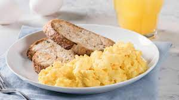

Scrambled eggs

Scrambled eggs. A ton of protein basically!
For those of you who want a huge amount of protein to give your muscles the building blocks that they need to grow bigger and stronger after a hard workout, you can't go wrong with scrambled eggs!
A single egg has anywhere between 4-7 grams of protein depending on its size.
Ingredients
- 5 eggs (I usually cook 5 eggs).
- 1 tomato.
- 150g of diced onions.
- 100g of green sweet pepper.
- A teaspoon of olive oil.
- Salt and cumen.
Cooking steps
- Cook the onions until they turn brownish.
- Add the tomato and pepper after dicing them into small pieces.
- Close the lid of the pan and reduce the heat to the lowest. Cook them for about 20min, and add a small amount of water if you think that it is not steamy enough.
- After the moisture dries, add the eggs (make sure to mix them and add the salt and pepper first!)
- Make sure to evenly cook everything by mixing while cooking until the egg reaches the level of softness you like!
- Enjoy your meal sir!